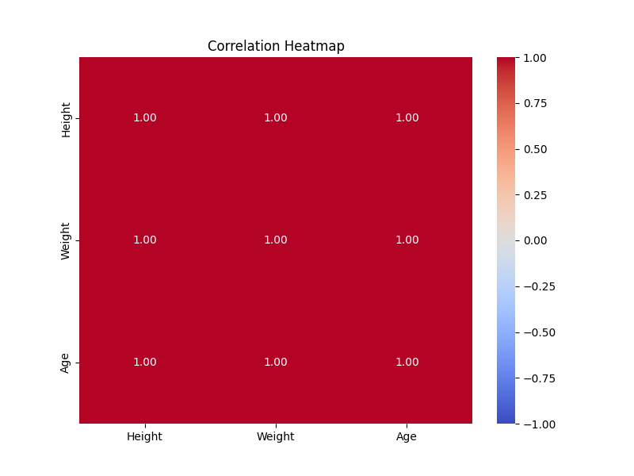
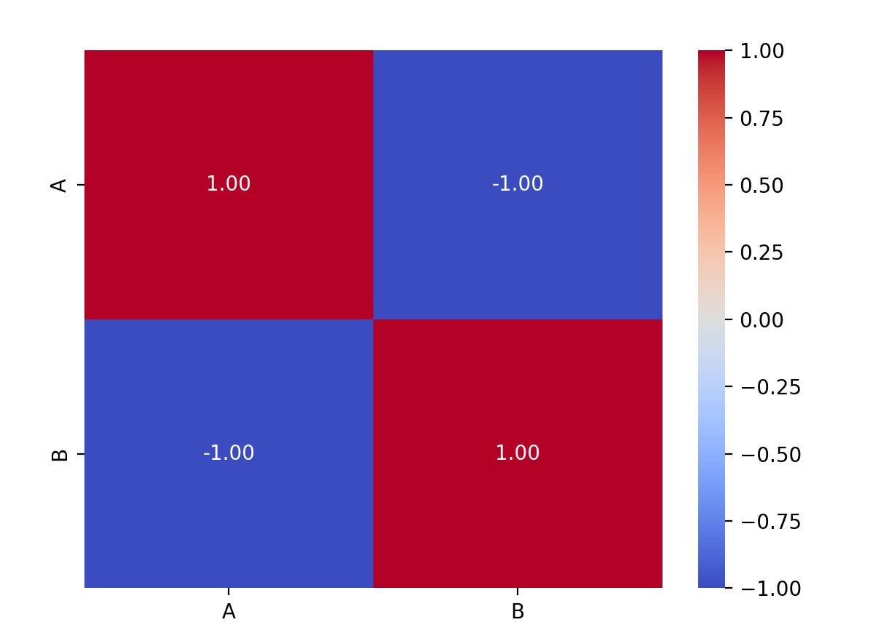

Pandas 相関分析
相関分析はデータ分析において一般的かつ重要なステップであり、データ内の異なる変数間の関係を理解するのに役立ちます。
Pandasでは、データの相関分析は、異なる変数間の相関係数を計算することで、それらの関係を把握します。
Pandasにおいて、データの相関は重要な分析タスクであり、データ内の各変数間の関係を理解するのに役立ちます。
Pandasはデータの相関を計算・分析するための複数の方法を提供しています。一般的な相関方法には、ピアソン相関係数（Pearson）、スピアマンの順位相関係数（Spearman）、ケンドールの順位相関係数（Kendall）が含まれます。
以下の相関方法は、変数間の線形関係、非線形関係、または単調関係を明らかにするのに役立ちます：
- ピアソン相関係数：変数間の線形関係を測定し、数値型変数に適しています。
- スピアマンの順位相関係数：変数間の単調関係を測定し、数値型および順序型変数に適しています。
- ケンドールの順位相関係数：変数間の順位関係を測定し、小サンプルデータに適しています。
- 相関行列：各変数間の相関を確認するために使用します。
- ヒートマップ：変数間の相関を直感的に確認できる効果的な可視化方法です。
相関とは？
相関は、2つ以上の変数間の関係の強さと方向を示します。相関の数値に基づいて、変数間の関係を判断できます。
- 正の相関：ある変数が増加すると、もう一方の変数も増加します。例えば、身長と体重の間には正の相関関係が存在する可能性があります。
- 負の相関：ある変数が増加すると、もう一方の変数は減少します。例えば、気温と暖房の使用量の間には負の相関関係が存在する可能性があります。
- 無相関：2つの変数の間に明確な関係がありません。
相関の数値範囲は通常 -1 から 1 の間です：
- 1：完全な正の相関
- -1：完全な負の相関
- 0：線形の相関がない
- 1 または -1 に近い：強い相関を示す
- 0 に近い：弱い相関を示す
Pandasにおける相関の計算方法
PandasはDataFrame.corr()とDataFrame.cov()メソッドを提供しており、相関と共分散を計算します。
Pandasはcorr()メソッドを使用して、データセット内の各列間の関係を計算します。
df.corr(method='pearson', min_periods=1)
パラメータの説明：
- method(オプション): 文字列型で、相関係数の計算方法を指定します。デフォルトは 'pearson' で、'kendall'（Kendall Tau 相関係数）または 'spearman'（Spearman 順位相関係数）も選択できます。
- min_periods(オプション): 相関係数を計算するために必要な最小観測値数を示します。デフォルト値は 1 で、少なくとも1つの非 null 値があれば計算が行われます。指定した場合、
min_periods、一部の列の非 null 値の数がその値より小さい場合、その列の相関係数は NaN に設定されます。
df.corr()メソッドは相関係数行列を返します。行列の行と列はデータフレームの列名に対応し、行列の要素は対応する列間の相関係数です。
一般的な相関係数には、Pearson 相関係数と Spearman 順位相関係数があります：
Pearson 相関係数
Pearson はピアソン相関係数であり、2つの変数間の線形関係の強さと方向を測定します。その値の範囲は -1 から 1 の間で、-1 は完全な負の相関、1 は完全な正の相関、0 は線形の相関がないことを示します。
ピアソン相関係数は2つの変数間の線形関係を測定するために使用され、計算式は次のとおりです：
Pandasはcorr()メソッドを使用して、データフレーム内の各列間の Pearson 相関係数を計算できます。
Pearson 相関係数
例
# サンプルデータ
data = {
'Height': [150, 160, 170, 180, 190],
'Weight': [45, 55, 65, 75, 85],
'Age': [20, 25, 30, 35, 40]
}
df = pd.DataFrame(data)
# ピアソン相関係数の計算
correlation = df.corr(method='pearson')
print(correlation)
出力結果：
Height Weight Age
Height 1.0 1.0 1.0
Weight 1.0 1.0 1.0
Age 1.0 1.0 1.0
説明:
corr()メソッドは各変数ペア間のピアソン相関係数を計算しました。method='pearson'はデフォルトのメソッドであり、ピアソン相関係数の計算を意味します。- 見てわかるように、
HeightとWeightとAgeはいずれも強い正の相関があります。
スピアマンの順位相関係数（Spearman Correlation）
スピアマン相関係数は、2つの変数の単調関係（線形か非線形かを問わず）を測定するために使用され、変数の順位に基づいて計算されます。スピアマン相関係数の値の範囲はピアソン相関係数と同じく -1 から 1 です。
例
# サンプルデータ
data = {
'Height': [150, 160, 170, 180, 190],
'Weight': [45, 55, 65, 75, 85],
'Age': [20, 25, 30, 35, 40]
}
df = pd.DataFrame(data)
# スピアマンの順位相関係数の計算
spearman_correlation = df.corr(method='spearman')
print(spearman_correlation)
出力結果：
Height Weight Age
Height 1.0 1.0 1.0
Weight 1.0 1.0 1.0
Age 1.0 1.0 1.0
説明：method='spearman' はスピアマンの順位相関係数を計算します。この例では、データが線形に増加しているため、スピアマン相関係数はピアソン相関係数と同じになります。
ケンドールの順位相関係数（Kendall Correlation）
ケンドールの順位相関係数も変数間の単調関係を測定するために使用され、2つの変数の順位間の一致性を計算することで得られます。
ケンドール相関係数の計算は比較的複雑で、小規模なデータセットに適しています。
例
# サンプルデータ
data = {
'Height': [150, 160, 170, 180, 190],
'Weight': [45, 55, 65, 75, 85],
'Age': [20, 25, 30, 35, 40]
}
df = pd.DataFrame(data)
# ケンドールの順位相関係数の計算
kendall_correlation = df.corr(method='kendall')
print(kendall_correlation)
出力結果：
Height Weight Age
Height 1.0 1.0 1.0
Weight 1.0 1.0 1.0
Age 1.0 1.0 1.0
説明：method='kendall' はケンドールの順位相関係数を計算します。この場合、データの変化は単調であるため、計算結果はピアソンおよびスピアマンと同じになります。
相関行列
相関行列は対称行列であり、行列の各値は2つの変数間の相関係数を表します。
corr() メソッドを使用して、DataFrame 内のすべての変数の相関行列を直接計算できます。
例
# サンプルデータ
data = {
'Height': [150, 160, 170, 180, 190],
'Weight': [45, 55, 65, 75, 85],
'Age': [20, 25, 30, 35, 40]
}
df = pd.DataFrame(data)
# 相関行列の計算
correlation_matrix = df.corr()
print(correlation_matrix)
出力結果：
Height Weight Age
Height 1.0 1.0 1.0
Weight 1.0 1.0 1.0
Age 1.0 1.0 1.0説明：相関行列は、どの変数間に強い線形または単調な関係があるかを迅速に特定するのに役立ちます。実際の分析では、相関行列は特徴選択と次元削減に非常に役立ちます。
相関ヒートマップ（Correlation Heatmap）
相関行列をより直感的に提示するために、ヒートマップ（Heatmap）を使用して各変数間の相関を可視化できます。
seaborn ライブラリを使用して相関ヒートマップを描画するのは一般的な方法です。
例
import matplotlib.pyplot as plt
import pandas as pd
# サンプルデータ
data = {
'Height': [150, 160, 170, 180, 190],
'Weight': [45, 55, 65, 75, 85],
'Age': [20, 25, 30, 35, 40]
}
df = pd.DataFrame(data)
# 相関ヒートマップの描画
plt.figure(figsize=(8, 6))
sns.heatmap(df.corr(), annot=True, cmap='coolwarm', fmt='.2f', vmin=-1, vmax=1)
plt.title('Correlation Heatmap')
plt.show()
表示は以下のとおりです：

説明：sns.heatmap() は相関ヒートマップを描画します。annot=True はヒートマップ上に数値を表示することを意味し、cmap='coolwarm' は色の範囲を設定し、vmin=-1, vmax=1 は色の範囲を -1 から 1 に制限します。
相関の可視化
ここでは Python の Seaborn ライブラリを使用します。Seaborn は Matplotlib に基づくデータ可視化ライブラリであり、統計グラフの描画に特化し、データ可視化のプロセスを簡素化することを目的としています。
Seaborn はいくつかのシンプルな高レベルインターフェースを提供しており、散布図、折れ線グラフ、棒グラフ、ヒートマップなど、さまざまな統計グラフを簡単に描画でき、優れた美的効果も備えています。
Seaborn のインストール：
pip install seaborn
例
import matplotlib.pyplot as plt
import pandas as pd
# サンプルデータフレームを作成
data = {'A': [1, 2, 3, 4, 5], 'B': [5, 4, 3, 2, 1]}
df = pd.DataFrame(data)
# Pearson 相関係数の計算
correlation_matrix = df.corr()
# ヒートマップを使用して Pearson 相関係数を可視化
sns.heatmap(correlation_matrix, annot=True, cmap='coolwarm', fmt=".2f")
plt.show()
説明：このコードはヒートマップを生成し、色で相関係数の強さを表します。正の相関は暖色系、負の相関は寒色系で表されます。annot=Trueパラメータはヒートマップ上に具体的な数値を表示します。

相関分析の応用
1、特徴選択
機械学習モデリングにおいて、相関分析はしばしば特徴量選択に使用されます。異なる特徴量間の相関を分析することで、ターゲット変数と最も関連性の高い特徴量を選択し、他の特徴量と高い相関を持つ冗長な特徴量を除去し、モデルの性能と効率を向上させることができます。
2、多重共線性の処理
2つ以上の特徴量間の相関が非常に高い場合（1または-1に近い場合）、これらの特徴量間には多重共線性の問題が存在します。回帰分析において、多重共線性はモデルの不安定性と予測の不正確さを引き起こします。相関の高い特徴量を削除または統合することで、多重共線性の問題を解決できます。
その他の拡張